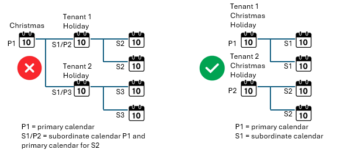
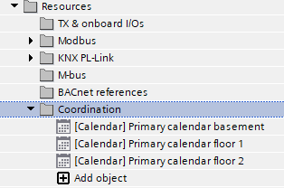
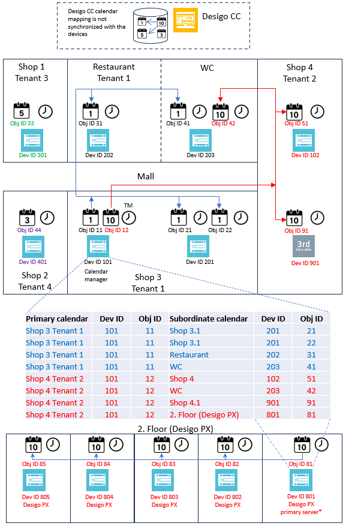
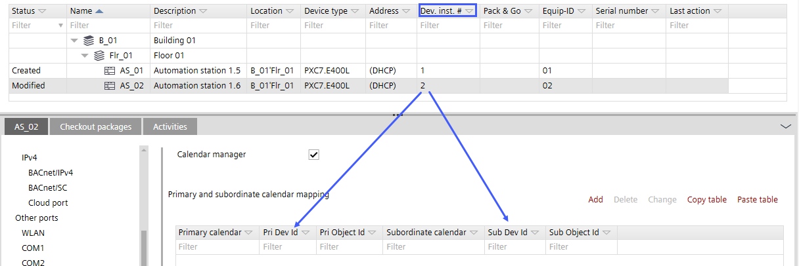

与日历管理器一起工作
日历管理器对象用于将日历数据从主日历复制到一个或多个从属日历。在较大的项目中，可以根据建筑情况创建多个主日历（不同的租户）。数据交换每天自动发生，或者可以在在线模式下主日历更改后触发以同步数据。
Scope and recommendation of the calendar manager function
- Use the calendar manager if calendars are not managed by, for example, Desigo CC.
- Create the calendar manager on a PXC4/5/7 with a device version ≥ 1.6.
Activating the calendar manager - Activate 1 calendar manager object on 1 Desigo device per job/customer/site only.
- Primary calendars and subordinate calendars can be hosted on any device of Desigo PXC4/5/7, PXC3 and DXR2, Desigo PX, Apogee and 3rd party devices.
Configuring the calendar manager the first time (manually)
Modifying a calendar entry in an existing calendar manager - Only change dates and times on the primary calendars (do not change subordinate calendar dates or times). Recommendation: define primary calendars on same device as the calendar manager with a proper name.
- The calendar manager updates all calendars from primaries calendar to subordinates calendar once a day (typically during the night, but the update can also be triggered manually by the Web interface).
Synchronizing of the calendar objects - Do not create hierarchies of primary calendars. Propagation from one primary calendar to another primary calendar does not work in such a case.

- Document and backup the calendar manger entries for later use.
Reporting of the global calendar objects
Engineering recommendations for ABT Site, Desigo control point and Desigo CC
- Desigo CC is available
- The primary calendar objects and subordinate calendars objects should be created with Desigo CC. It is recommended not to create a calendar manager object in the device created by ABT Site because a synchronization between Desigo CC and the calendar manager is not supported.
- Desigo CC is not available
此建议适用于 Desigo 网络中 Desigo 控制点、ABT 站点和 Web 界面的工程设计和在线操作。
- The calendar manager should be located on one PXC4/5/7 device only, for example, on the same device where the time manager is defined. The device will have a calendar manager icon so that the device can easily be identified within a project.
- All primary calendars and subordinate calendars are defined (mapping) in the calendar manager object of this device.
Note: Only online changes on primary calendars will be distributed, online changes on subordinate calendars will get overwritten (and lost) with next synchronization - Recommendation: The primary calendars should all be created in the calendar manager device. This is the only way of ensuring that the time changes in the online mode are made to a primary calendar object.

NOTICE

日历数据不同步
如果定义了异常，则设备无法正确打开或关闭。
- Create only one global calendar manager object (GlblCalendarMgr) in the Desigo system. Check with a standard BACnet client “Who-Has” service if there is only one global manager object. This is also valid if you have more than one ABT Site project in a bigger customer project.
- Check whether multiple calendar nesting has been defined. Only one hierarchy level from primary manager to subordinate calendar is allowed.
- Check whether the device ID and object ID are entered correctly. These are not checked by default and checking them is the responsibility of the project engineer.

* Desigo PX 日历对象的同步通过标准机制完成到从属 Desigo PX 设备。这意味着日历管理器中只需要引用 Desigo PX 主服务器。

可以通过输入设备 ID 和对象 ID 以与 Desigo 日历相同的方式集成第 3 方日历。
Where can I find the device ID and the object ID?
- Go to Building > Building structure.
- Select the desired device.

- Create a calendar report to collect all the information for the device ID and the object ID needed.
Export the calendar information of the entire project
Further information
- Workflow calendar manager
- Exporting the calendar information of the entire project
- Activating the calendar manager
- Configuring the calendar manager the first time (manually)
- Configuring the calendar manager the first time (with Excel)
- Synchronizing of the calendar objects
- Reporting of the global calendar objects
- Additional procedures